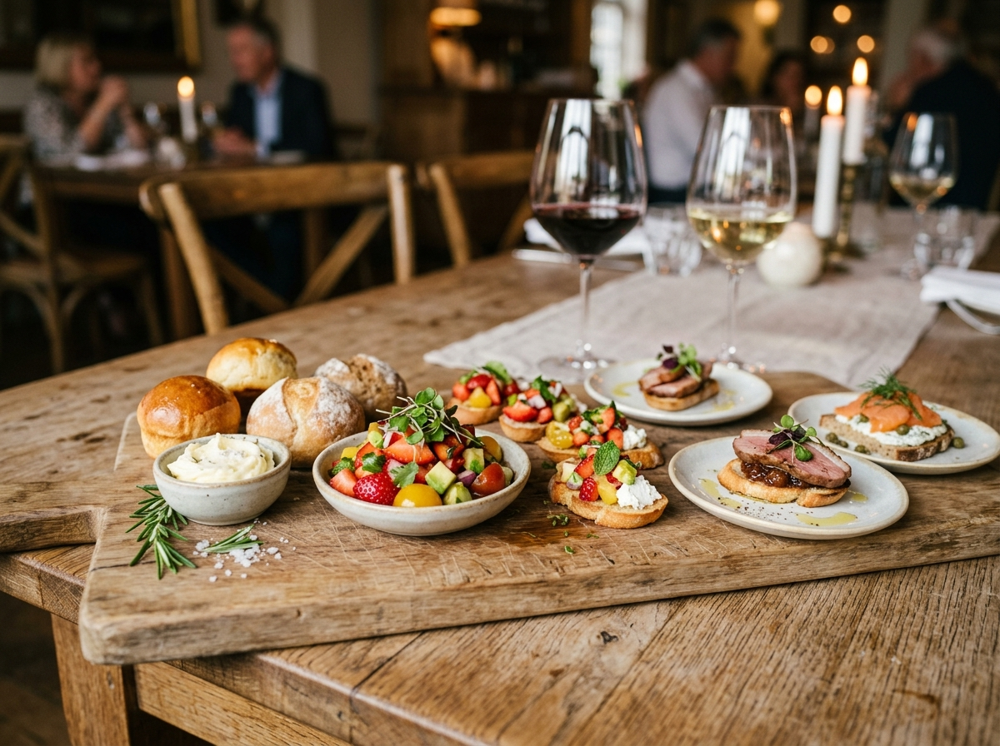
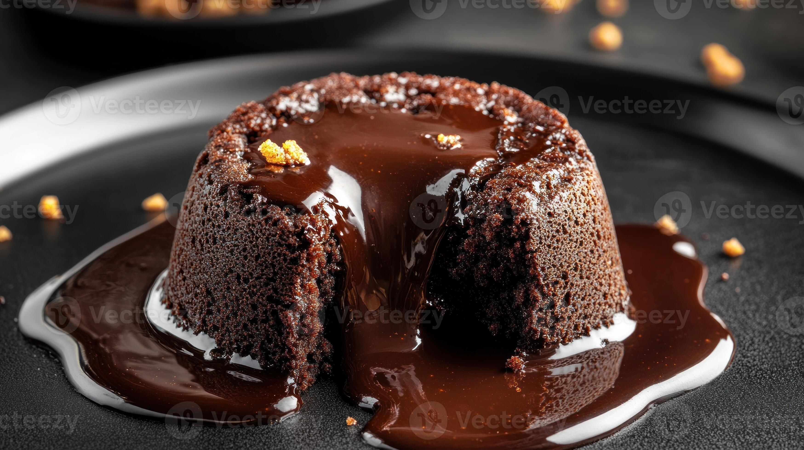
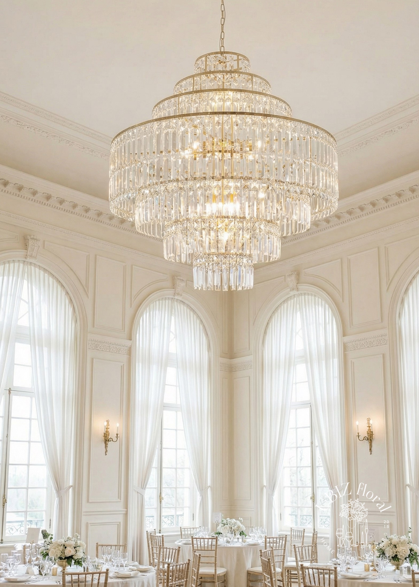

EVERYDAY DINING
প্রতিদিনের ভালো সময়
লাঞ্চের বিরতি, বিকেলের আলাপ বা রাতের খাবার—স্বস্তিতে বসে প্রিয় স্বাদের সঙ্গে সময় কাটান।

MORE THAN A MEAL
রোজকার খাবার থেকে আনন্দের আয়োজন—আপনার সময়টুকু আরও বিশেষ করে তোলার একটি জায়গা।
CHOOSE YOUR MOMENT
লাঞ্চের বিরতি, বিকেলের আলাপ বা রাতের খাবার—স্বস্তিতে বসে প্রিয় স্বাদের সঙ্গে সময় কাটান।

শেয়ার করার মতো মেনু, আরামদায়ক পরিবেশ ও আন্তরিক সেবা—একসাথে বসার জন্য আদর্শ।

জন্মদিন, ছোট পারিবারিক অনুষ্ঠান কিংবা দলগত মিলনমেলা নিয়ে কথা বলতে আমাদের সঙ্গে যোগাযোগ করুন।
PLAN A GATHERING
আয়োজনের আকার, অতিথি সংখ্যা ও পছন্দের মেনু জানালে আমরা সঠিকভাবে প্রস্তুতির বিষয়ে আপনাকে নির্দেশনা দিতে পারি। বুকিং নিশ্চিত করার জন্য আমাদের যোগাযোগ পেজ বা Facebook-এ বার্তা দিন।
আয়োজনের কথা বলুন ↗VISIT TERRACOTTA
আপনি দুইজনের জন্য আসুন বা সবাইকে নিয়ে, আগে থেকে সিট বুক করলে আপনার পছন্দের সময়টি নিশ্চিত করা সহজ হয়। ঠিকানা, ফোন ও ম্যাপের জন্য যোগাযোগ পেজটি দেখুন।
ঠিকানা ও যোগাযোগ →